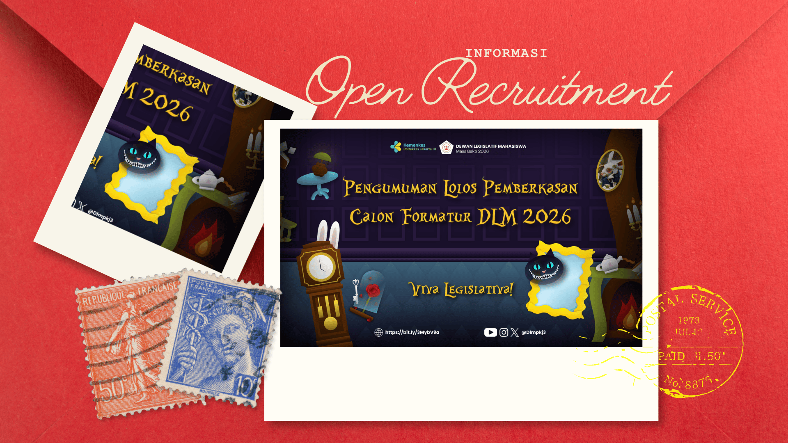
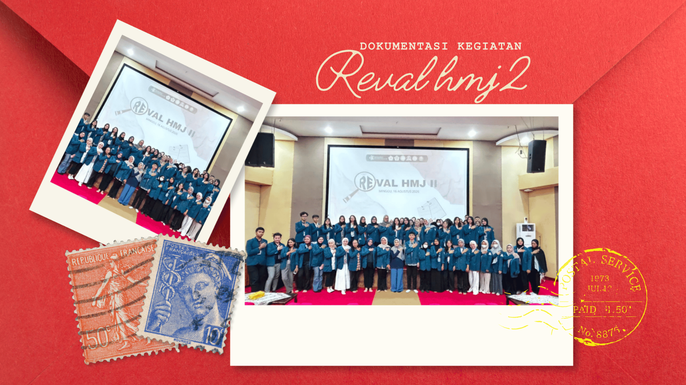
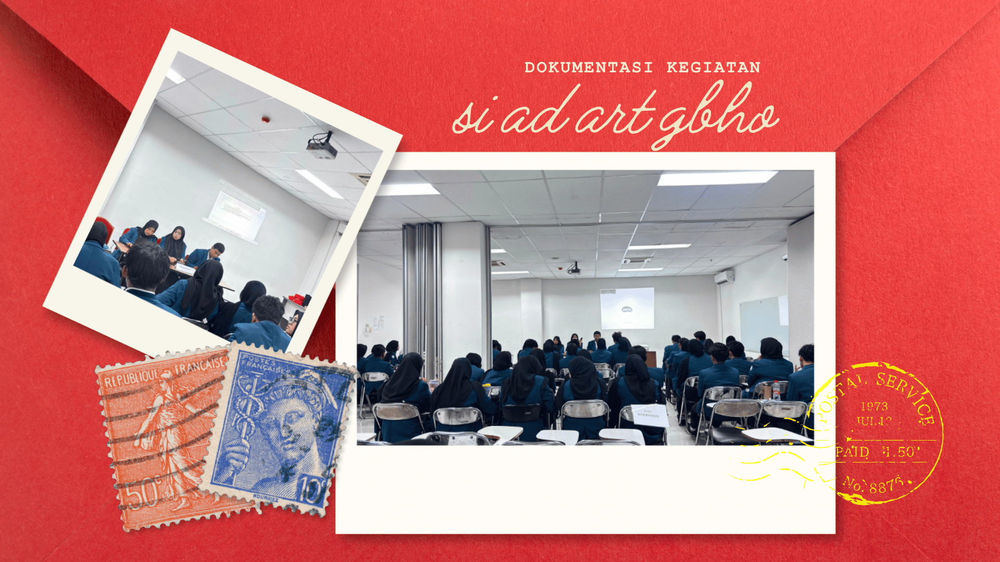
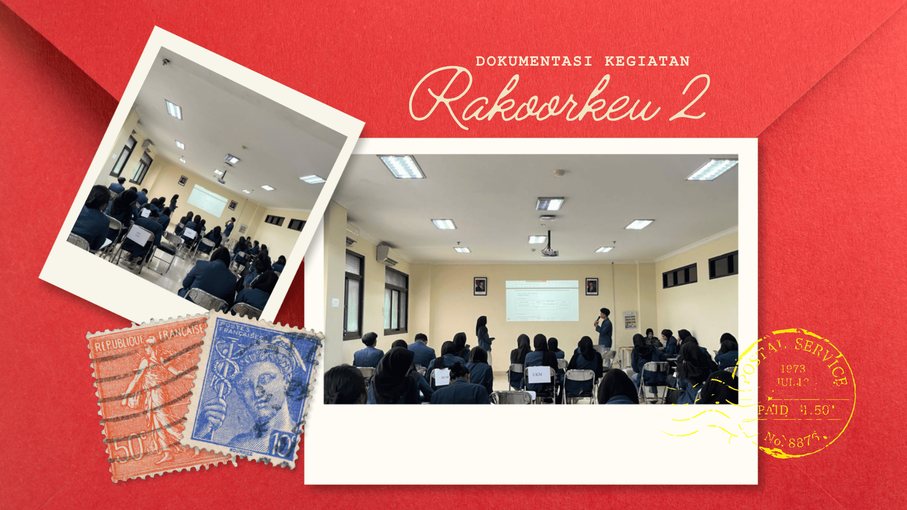
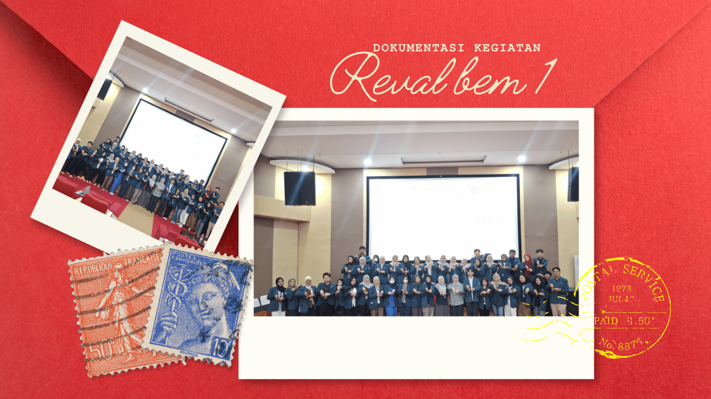
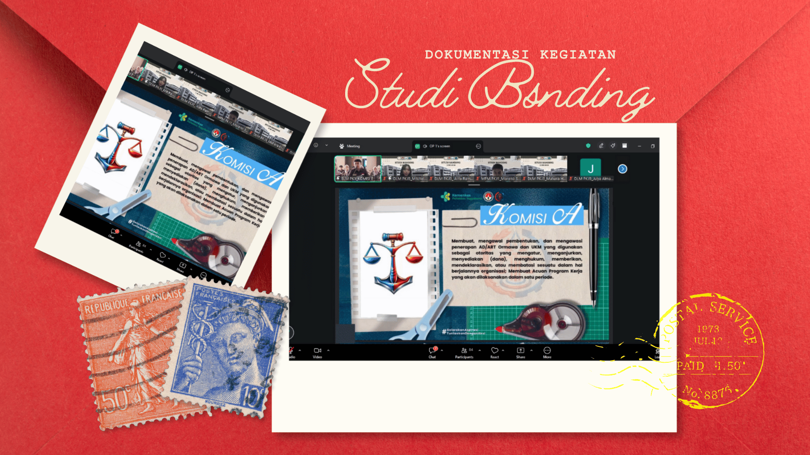
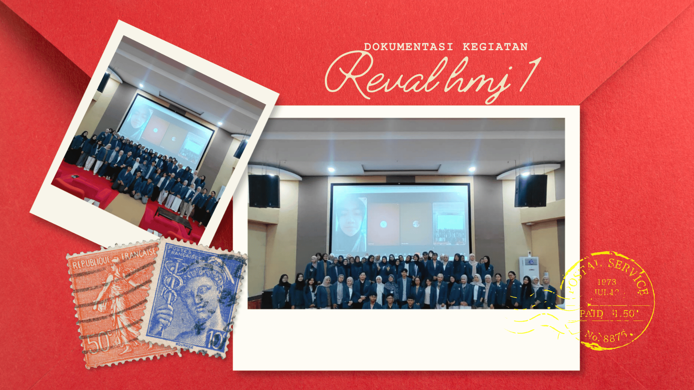
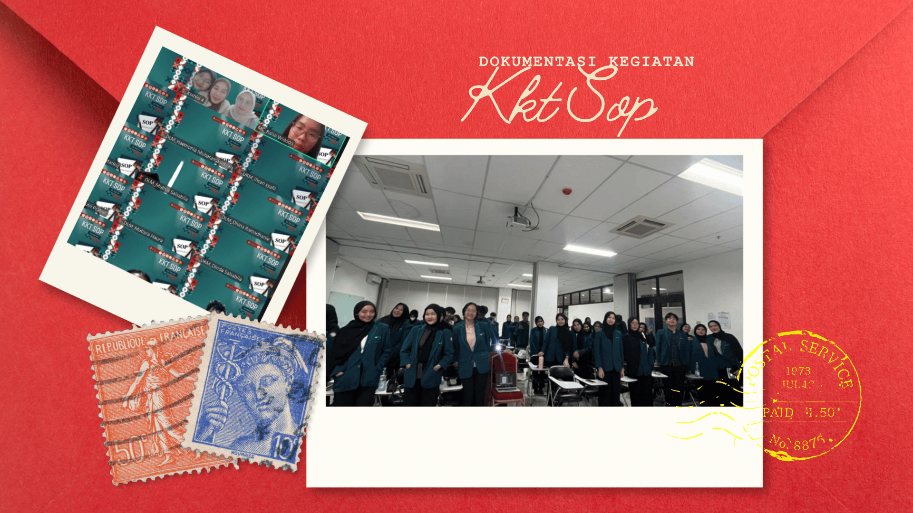
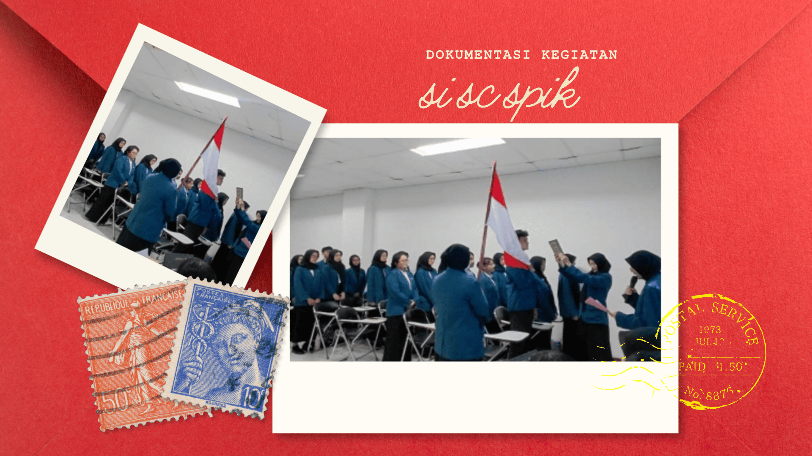

Informasi
INFORMASI RESMI
Berita & Informasi
Temukan informasi terbaru seputar kegiatan, program kerja, persidangan, dan aktivitas Dewan Legislatif Mahasiswa Poltekkes Kemenkes Jakarta III.
UPDATE TERKINI
Berita Terbaru
Informasi dan dokumentasi terbaru dari DLM.

Rapat EvaluasiRapat Evaluasi HMJ II
Telah dilaksanakannya Rapat Evaluasi HMJ II pada tanggal 16 September 2026 secara offline di Auditorium Lantai 4 Gedung Direktorat Poltekkes Kemenkes Jakarta III dan online melalui Google Meeting.
Baca Selengkapnya
LegislasiSidang Istimewa Perubahan Produk Hukum AD/ART dan GBHO
Telah dilaksanakan sidang istimewa perubahan produk hukum pada tanggal 1 Agustus 2026 bertempat di Gedung Harni Koesno Lantai 4, Ruang Kelas 4.2 dan 4.3, Poltekkes Kemenkes Jakarta III. Kegiatan ini dilaksanakan dalam rangka.....
Baca Selengkapnya
KeuanganRapat Koordinasi Keuangan II
Telah dilaksanakan Rapat Koordinasi Keuangan II pada tanggal 27 Juni 2026 secara offline yang bertempat di Gedung Soerodo lantai 6, ruang kelas 6.4–6.5. Kegiatan ini dihadiri oleh total 77 orang yang terdiri dari 32 orang anggota DLM, 5 orang anggota l...
Baca Selengkapnya Persidangan
Persidangan
Sidang Istimewa Pelantikan KP & KPR
Telah dilaksanakan Sidang Istimewa pada tanggal 24 Mei 2026 dalam rangka pelantikan Pelantikan Komisi Pengawasan (KP) dan Komisi Pemilihan Raya (KPR) PEMIRA periode 2026 di Poltekkes Kemenkes Jakarta III. KP merupakan....
Baca Selengkapnya
Rapat EvaluasiRapat Evaluasi BEM I
Telah dilaksanakan Rapat Evaluasi BEM I pada tangga 10 Mei 2026 secara offline di Auditorium Lt.4 Gedung Direktorat. Kegiatan ini dihadiri oleh 56 pengurus LKM yang terdiri dari...
Baca Selengkapnya
PengembanganStudi Banding 2026
Telah dilaksanakan Studi Banding pada tanggal 9 Mei 2026 secara online bersama BLM Poltekkes Surabaya, MPM Poltekkes Jakarta I, BLM Poltekkes Yogyakarta. Kegiatan ini....
Baca Selengkapnya
Rapat EvaluasiRapat Evaluasi HMJ I
Telah dilaksanakan Rapat Evaluasi HMJ I pada tanggal 26 April 2026 secara offline di Auditorium Lantai 4 Gedung Direktorat Poltekkes Kemenkes Jakarta III dan online melalui Google Meeting. Kegiatan ini dihadiri oleh 85 pengurus LKM yang Terdiri dari...
Baca Selengkapnya Keuangan
Keuangan
Rapat Koordinasi Keuangan I
Telah dilaksanakannya Rapat Koordinasi Keuangan I pada tanggal 8 Maret 2026 secara online melalui zoom meeting. Kegiatan ini dihadiri oleh total 69 anggota LKM yang terdiri dari 36 orang anggota DLM, 2 orang anggota BEM, 5 orang anggota UKM... Baca Selengkapnya
Persidangan
Konsolidasi dan Kupas Tuntas (KKT) SOP
Telah dilaksanakan Konsolidasi dan Kupas Tuntas (KKT) SOP 2026 pada tanggal 8 Februari 2026 untuk Konsolidasi dan pada tanggal 22 Februari 2026 untuk Kupas Tuntas dalam rangka
Baca Selengkapnya
PersidanganRancangan Anggaran Pendapatan dan Belanja Lembaga Keorganisasian (RAPBLK) dan Rapat Kerja (RAKER) Periode 2026.
Telah dilaksanakannya kegiatan Rancangan Anggaran Pendapatan dan Belanja Lembaga Keorganisasian (RAPBLK) dan Rapat Kerja (RAKER) Periode 2026 oleh Dewan Legislatif Mahasiswa (DLM) Poltekkes Kemenkes Jakarta III pada tanggal 10–11 Januari 2026 dan 18 Januari 2026, bertempat di...
Baca Selengkapnya
PersidanganSidang Istimewa Pelantikan SC & SPIK
Telah dilaksanakan Sidang Istimewa pada tanggal 2 Januari 2026 dalam rangka pelantikan SC dan SPIK Dewan Legislatif Mahasiswa Poltekkes Kemenkes Jakarta III.
Baca Selengkapnya
DLM Poltekkes Kemenkes Jakarta III
Suara Mahasiswa, Tanggung Jawab Bersama.
Ikuti terus informasi dan kegiatan terbaru Dewan Legislatif Mahasiswa.